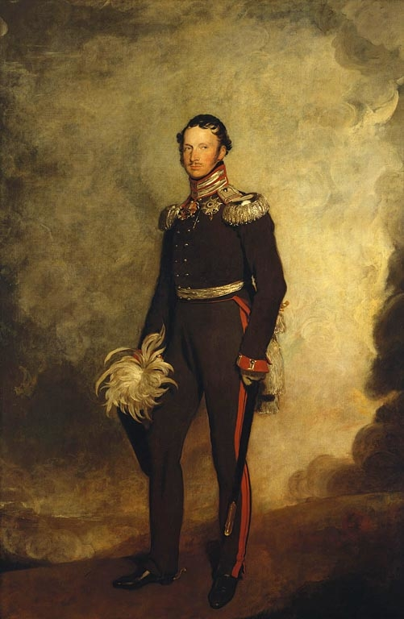
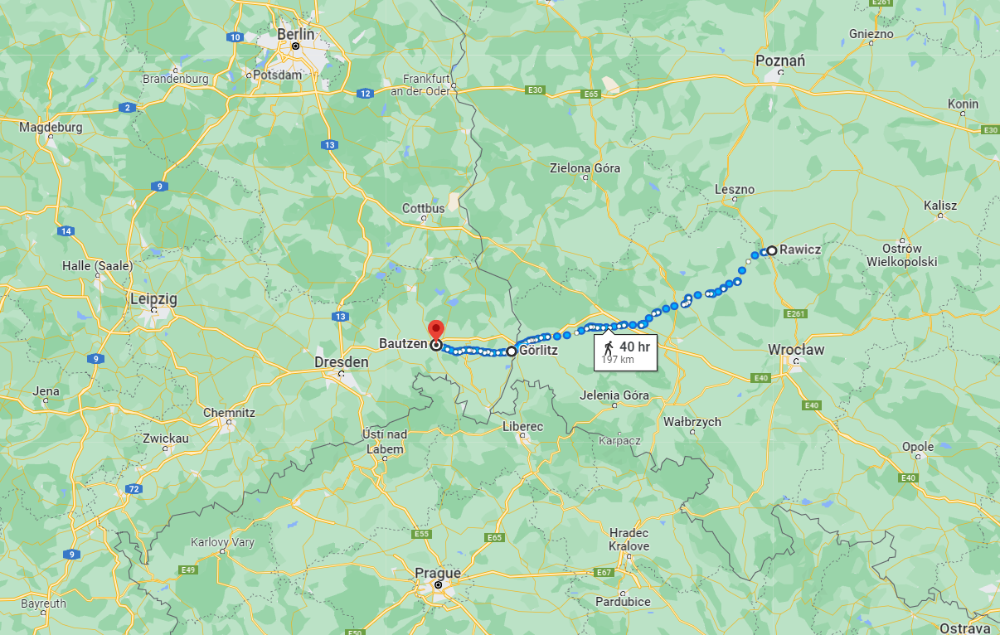
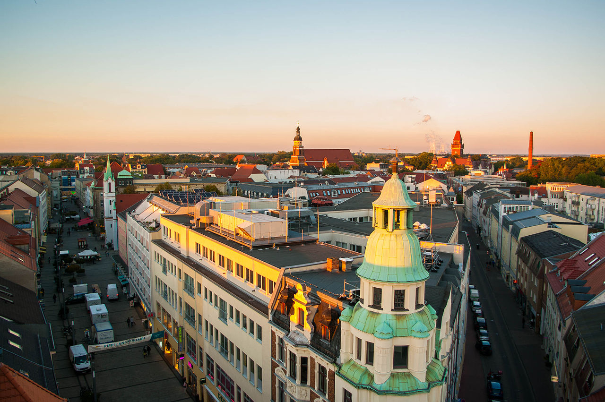
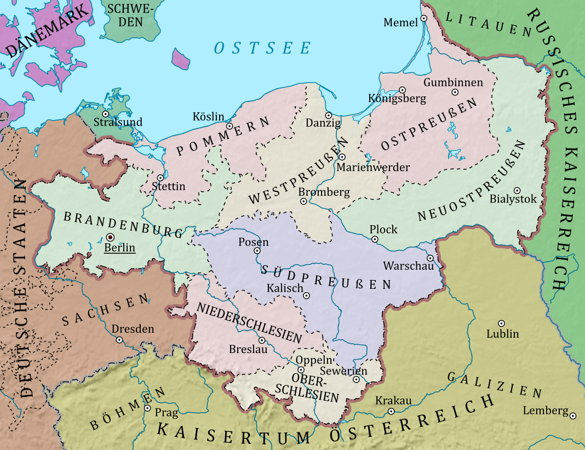

진격의 러시아, 뒤쳐진 프로이센 - 갈등의 작은 시작
게시: 2022-06-06T06:30:44+09:00
당시 연합군의 최고 권력자는 당연히 짜르 알렉산드르였습니다. 그리고 프로이센군과 러시아군을 다 통틀어서 최고의 브레인은 바로 샤른호스트였습니다. 적어도 알렉산드르가 볼 때는 그랬습니다. 누가 봐도 멍게, 즉 멍청하고 게으른 성향의 지휘관인 쿠투조프에게 질렸던 알렉산드르는 샤른호스트와 만나서 이야기해본 뒤 그의 성실과 명석, 치밀한 논리에 홀딱 넘어가서 만나는 사람마다 그에 대한 칭송을 늘어 놓았습니다. 평민 출신의 직업 군인 주제에, 군무에 필요하다 싶으면 가끔씩 국왕을 무시하는 듯한 행동까지 서슴치 않는 샤른호스트에 대해 내심 벼르고 있던 프리드리히 빌헬름이 감히 샤른호스트를 어쩌지 못한 것은 사실 알렉산드르의 그런 호감을 잘 알고 있기 때문이기도 했습니다.

(프로이센 국왕 프리드리히 빌헬름 3세는 나폴레옹과 동갑이었지만 많은 측면에서 나폴레옹과는 정반대의 인물이었습니다. 그는 일단 와이프 루이자 왕비에게 정무적 측면에서나 정서적 측면에서나 크게 의존하는 나약한 인물이었고, 많은 동시대 사람들이 '극단적으로 수줍음이 많고 결정 장애를 가지고 있다'라고 평가할 정도로 군주로서는 부적절한 인물이었습니다. 그러나 그런 나약함에도 불구하고 전제군주로서는 상당히 욕심이 많아서, 프로이센에도 헌법을 도입하겠다던 약속을 전쟁이 끝나자 헌신짝처럼 내버리기도 하고 나폴레옹이 프랑스의 카톨릭 성당에 대한 통제권을 가졌듯이 프로이센 내의 프로테스탄트 교회를 통합하여 자신이 최고 주교 노릇을 하려 했습니다.) 문제는 그래서 샤른호스트가 러시아군 사령부가 있는 칼리쉬에 붙어 있어야 했다는 것이었습니다. 샤른호스트는 원래 블뤼허와 함께 프로이센 제2 군단과 함께 드레스덴 침공에 나설 작정이었습니다. 자기가 전에 모시던 상관이라서 누구보다도 블뤼허를 잘 알고 있던 샤른호스트는 블뤼허가 사고를 치지 않도록 조율할 참모가 필요하다는 것을 잘 알고 있었기 때문이었습니다. 그러나 샤른호스트도 사람인지라 두 곳에 동시에 존재할 수는 없었으므로, 어쩔 수 없이 칼리쉬에 돌아가야 했습니다. 대신 샤른호스트는 자신 대신 블뤼허를 보좌할 참모장으로 그나이제나우를 임명했습니다. 러-프 연합군이 크게 2갈래로 나뉘어 좌익의 블뤼허는 드레스덴으로, 우익의 비트겐슈타인은 베를린으로 진격한 것도 그런 샤른호스트의 작전계획에 따른 것이었습니다. 아직 나폴레옹이 어떻게 나올지 알 수 없으니, 먼저 가능한 넓은 지역을 장악하여 인력과 물자를 확보하자는 것이었지요. 다만, 양쪽 모두에서, 선봉은 프로이센군이 아니라 러시아군이 섰습니다. 가령 블뤼허의 프로이센 제2 군단은 3월 16일에 브레슬라우를 출발했지만, 러시아군은 더 빨리 움직였습니다. 빈칭게로더의 러시아군 선봉대 1만3천은 이미 훨씬 전에 라비트쉬(Rawitsch, 폴란드어로는 라비취(Rawicz))를 출발하여 3월 17일에는 작센의 국경 도시인 괴를리츠(Görlitz)에 도착했고, 거기서 조금 정비를 한 뒤 20일에는 드레스덴 바로 코 앞의 도시인 바우첸(Bautzen)에 입성했습니다. 블뤼허의 프로이센군은 그 뒤를 따라 움직였고, 3월 19일에야 리그니츠(Liegnitz, 폴란드어로는 레그니차(Legnica))에 도착했습니다. 리그니츠는 브레슬라우와 괴를리츠의 딱 중간 지점에 위치한 곳으로서, 3일 동안 70km를 이동한 것입니다. 여기서 바우첸까지는 130km나 떨어져 있었으니까, 블뤼허는 빈칭게로더보다 거의 5~6일 뒤진 셈이었습니다.

(라비트쉬에서 괴를리츠를 거쳐 바우첸으로 가는 여정은 대략 200km로서, 당시 평균적인 군대라면 10일 정도 걸리는 거리입니다.) 베를린으로 향한 부대의 선봉도 요크가 이끄는 프로이센군이 아니라 비트겐슈타인의 러시아군이었습니다. 비트겐슈타인의 선봉은 디빗취(Hans Karl von Diebitsch)였는데, 디빗쉬는 엘베 강을 면한 요충지 비텐베르크(Wittenberg)를 향했고, 비트겐슈타인의 본대는 3월 11일 베를린에 도착하여 이미 외젠이 철수한 그 도시에 무혈 입성했습니다. 다만 비트겐슈타인은 샤른호스트의 계획에 따라 블뤼허와 보조를 맞추기 위해 블뤼허가 드레스덴에 입성할 때까지 베를린에 머물렀고, 요크 대공의 프로이센군은 3월 17일에야 베를린에 입성했습니다.

(디빗취입니다. 그는 당시 불과 28세의 젊은 나이였는데, 특이하게도 그는 슐레지엔에서 태어난 프로이센 귀족으로서 교육도 베를린의 사관학교에서 받았습니다만 16살의 나이에 러시아군에 기용되어 계속 러시아군으로 경력을 쌓았습니다. 그래서 아우스테를리츠와 아일라우, 프리틀란트 등의 전투에 모두 참전한 베테랑이었고, 불과 27세의 나이였던 1812년에 소장으로 승진했습니다. 그는 이후 드레스덴 전투와 라이프치히 전투 등에서도 잘 싸웠고 1814년 파리까지 진격했으며 비엔나 회의에도 참여했습니다. 전쟁이 끝난 뒤에는 주로 오스만 투르크와 싸웠는데, 1831년 폴란드 반란을 진압하다 당시 동유럽을 강타한 콜레라에 걸려 비참한 최후를 맞았습니다. 그가 콜레라에 걸린 것은 사실이지만, 그의 죽음이 병사인지 자살인지에 대해서는 이견이 있다고 합니다.) 이렇게 독일에서 과거 프로이센 영토였던 지역을 행군하는데 러시아군이 앞장을 서고 프로이센군이 그 뒤를 따라오는 모습은 그다지 좋게 보이지 않을 수 있습니다. 그럼에도 불구하고 이때까지만 해도 프로이센군과 러시아군 사이에서는, 적어도 클라우제비츠가 기록한 바에 따르면 아무런 알력이나 말썽이 없었습니다. 심지어 자존심 강한 블뤼허도 총사령관 쿠투조프에게 고분고분 굽신굽신하는 편지를 써바쳤고, 애초에 프로이센을 하찮게 여기던 쿠투조프도 적어도 겉으로는 블뤼허 등 프로이센 장군들을 존중하는 모습을 보여주었습니다. 이 모든 것이 쌍방이 공유하는 나폴레옹에 대한 증오, 그리고 샤른호스트 덕분이었습니다. 러시아군의 뒤를 따라 진격하는 프로이센군도, 그나이제나우가 남긴 당시 편지들을 보면 사기가 매우 드높았고 애국심과 투지로 들떠 있었습니다. 그러나 어떻게 보면 별로 중요해보이지 않는 사건에서 문제가 당장 드러났습니다. 3월 22일, 아직 작센 국경선을 넘지 않은 분츨라우(Bunzlau)에서 블뤼허는 참모 그나이제나우를 시켜 진격 방향에서 북쪽으로 살짝 비켜있는 코트부스 주민들을 대상으로 하는 포고문을 작성하게 합니다. 코트부스는 원래 프로이센의 영토였다가 1807년 틸지트 조약의 결과에 따라 작센 왕국에게 귀속된, 즉 빼앗긴 영토였습니다. 그 내용은 어떻게 보면 해방군 프로이센 제2 군단으로서는 당연한 것이었습니다. 이제 코트부스는 작센의 통치에서 벗어나 다시 프로이센 왕국으로 귀속되니, 주민들은 프리드리히 빌헬름의 신민으로서 프로이센과 그 동맹국에게 협조하라는 내용이었습니다.

(코트부스는 원래 루자티아(Lusatia)라라고 부르는, 서부 슬라브 계열의 소수 민족이 사는 지역의 일부로서 15세기 전에는 보헤미아의 일부였습니다. 그러다 신성로마제국의 제후국인 브란덴부르크가 이 지역을 손에 넣었고, 18세기 초에 브란덴부르크가 프로이센 공국과 혼인으로 병합되면서 프로이센의 일부가 되었습니다. 그러나 제4차 대불동맹전쟁의 결과 프로이센이 참패하면서 1807년 이 지역은 작센 왕국으로 할양된 바 있었습니다. 결국 이 지역은 1815년 다시 프로이센으로 넘아가게 되었지요.)

(위 지도는 프로이센이 찌그러들기 전인 1806년의 영토입니다. 흔히 우리가 프로이센이라고 알고 있는, 베를린을 포함한 독일 중심 지역은 사실 프로이센이 아니라 브란덴부르크입니다. 실제 프로이센은 오늘날 대부분 폴란드 땅이 되어 있지요. 브란덴부르크하면 뭔가 굉장히 있어 보이지만, 의외로 경제적으로 크게 발전한 곳은 아니라서 베를린의 뒤를 이어 브란덴부르크에서 2번째로 큰 도시가 인구 10만이 채 안되는 작은 대학 도시인 코트부스입니다.) 당연히 코트부스에 파견 나와있던 작센 관리들은 블뤼허에게 항의했습니다. 항의한 내용은 2가지로서, 코트부스는 작센에게 보상 형식으로 주어진 합법적 작센 영토라는 것과 함께, 그 포고문 속에서 작센 국왕 프리드리히 아우구스투스를 마치 프랑스군의 포로처럼 지칭한 것은 부당한 모욕이라는 것이었습니다. 실제로 부당한 일이었습니다. 뒤에서 설명하겠지만, 당시 아우구스투스는 프랑스군 손에 있는 것이 아니라 바이에른에 접경한 작센 도시 플라우엔(Plauen)으로 프로이센-러시아 연합군을 피해 몽진을 떠난 상태였기 때문이었습니다. 그런 작센 관리들에게, 그저 용감한 군인에 불과했던 블뤼허는 나름대로 합리적인 대응을 했습니다. 그는 작센 관리들에게 '우리가 원래 우리의 것을 되찾는 것 뿐이다, 너희도 우리와 뜻을 함께 하기를 바란다, 우리는 이웃이자 친구로 왔고 작센군이 우리에게 적대적 행위를 하지 않는 이상 우리 군대는 작센 주민들을 우호적으로 대할 것이다'라고 답을 했습니다. 그런데 이런 포고문이 필요했던 진짜 이유는 따로 있었습니다. 바로 러시아군 때문이었습니다. 나폴레옹이 러시아를 침공할 때 가는 곳곳마다 징발이라는 이름으로 그 지방의 식량을 탈탈 털었던 것과 마찬가지로, 러시아군과 프로이센군도 현지 조달을 할 수 밖에 없었습니다. 그리고 나폴레옹이 네만 강을 넘기도 전에, 동맹국인 프로이센과 바르샤바 공국의 주민들까지도 탈탈 털었듯이, 러시아군도 프로이센령 슐레지엔에서조차 비슷하게 행동했습니다. 물론 러시아군 수뇌부는 동맹국인 프로이센은 물론, 향후 통과하게 될 작센 및 베스트팔렌 등의 독일 지역 주민들을 우호적으로 대하라고 엄명을 내렸습니다. 그러나 수만의 러시아군을 작은 독일 마을들이 먹여살리는데는 한계가 있었습니다. 프로이센 관리들이 러시아군을 배불리 먹이지 못하자, 배고픈 빈칭게로더의 러시아군은 프로이센 주민들을 사실상 약탈하기 시작했습니다. 그리고 이런 약탈 행위는 프리드리히 빌헬름이 있는 브레슬라우 바로 옆 볼라우(Wohlau)와 슈타이나우(Steinau) 등의 프로이센령 슐레지엔에서도 서슴치 않고 진행되었습니다. 그러나 궁한 처지였던 약소국 프로이센으로서는 할 수 있는 것이 별로 없었습니다. 오히려 그런 러시아군 뒤를 따라 전진하던 그나이제나우는 그렇게 약탈 피해를 입은 지역의 프로이센 관리들이 업무 처리를 제대로 못했기 때문에 벌어진 일이라고 비난했습니다. 그렇게 자존심이라도 세우는 것 이외에는 사실 방법이 없었습니다. 그렇다면, 블뤼허와 그나이제나우가 코트부스를 프로이센령이라고 선언한 것은 러시아군의 약탈로부터 코트부스 주민들을 보호하기 위한 것이었을까요? 아니었습니다. 블뤼허의 프로이센군도 먹어야 하는 입장은 마찬가지라서 그들도 자국 주민들에게 가혹한 징발을 마구 수행했습니다. 그리고 러시아군은 징발에 있어서 어차피 프로이센령이나 작센령을 가리지 않았습니다. 그런데 왜 굳이 코트부스가 프로이센령이라고 포고문을 발행했을까요? 이유는 앞서 진격하는 러시아군이 모든 식량과 물자를 먼저 먹어치우다보니 프로이센군의 현지 조달이 그만큼 어려웠기 때문이었습니다. 애초에 베를린 쪽에서건 드레스덴 쪽에서건 굳이 러시아군이 앞장을 서도록 배정된 것도 그런 현지 조달에서의 이점을 가지려는 러시아군의 주장 때문이었습니다. 그래서 드레스덴으로 가는 방향에서는 살짝 비켜난 지역이었던 코트부스를 블뤼허는 굳이 프로이센령이라고 선언하고 러시아군으로부터 침을 발라놓은 것이었습니다. 그러니까 코트부스 주민들은 러시아군이 아니라 프로이센군으로부터 약탈 당하게 된 것이지요. 그러나 나름 머리를 썼던 이 조치는 의외의 역풍을 맞게 됩니다. Source : The Life of Napoleon Bonaparte, by William Milligan Sloane Napoleon and the Struggle for Germany, by Leggiere, Michael V https://en.wikipedia.org/wiki/Hans_Karl_von_Diebitsch http://www.historyofwar.org/articles/people_diebitsch.html https://en.wikipedia.org/wiki/Cottbus https://commons.wikimedia.org/wiki/File:Prussia_1806_map_-_DE.svg
{kind=link}